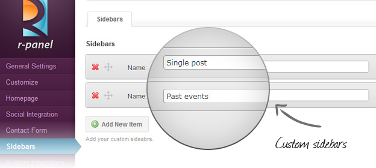

Widgets and sidebars
Widget
Widget is a fancy word for tools or content that you can add, arrange, and remove from the sidebars of your blog. Widgets make it easy to customize the content of your blog sidebar. You can access the widgets page from the Appearance menu in your Dashboard.
To open and close a widget, mouse over the widget bar and click the small arrow that appears to the right.
Adding Widgets
To add a widget, drag the widget from the Available Widgets or Inactive Widgets area on the left into the Sidebar area on the right. When you see a dashed line appear, you can drop the widget into place.
You can also change the order of the widgets by dragging and dropping them around in the sidebar.
Configuring Widgets
Each widget has configuration options. To make changes to a widget in the sidebar, click on the triangle on the right side. This will open up the options for the widget. Each widget will be different.
After you have have configured the widget, click the Save button. Clicking the Close link will minimize the configuration options again.
Removing Widgets
If you would like to remove a widget from the sidebar, click the Delete link in the configuration options as show above.
Unlimited sidebars with R-Panel
Create new sidebar and assign it to any page or post. Now you can design special sidebars for each page with easy.
Go to -> Theme General Settings -> Sidebars. Click on 'Add New Item', then in the field labeled 'Name' type the name of your sidebar and click on 'Save' button. Now you can add widgets to the new sidebar. Go to a page or post where you want to see your sidebar. Select your sidebar in the page options and click on save button. Your sidebar should be now visible on the site.
Custom widgets available in this template
- R-post
Displays your blog's most recent posts.
- R-Twitter
Displays your most recent tweets.
- R-Flickr
Pulls in images from your Flickr feed.
- R-Cat
Display and exclude your blog categories.
- R-Comments
Display latests comments for your blog.